IIM Bangalore • Founder • Investment Banking Aspirant
Surya
Swarup
I’m Surya Swarup, a first-year BBA student at IIM Bangalore, founder of CIVILIZATION INDUSTRIES, CFA Level I candidate, Olympiad medalist, and a student deeply interested in investment banking, frontier technology, and long-horizon venture building.
Current Positioning
Aspiring Investment Banker
Finance • Strategy • Deep-tech Entrepreneurship
About
A personal brand designed around ambition, clarity, and long-term conviction.
My work sits at the intersection of business, technology, finance, and civilization-scale thinking. Alongside academics at IIM Bangalore, I’m building exposure through student leadership, ambassador roles, research-led learning, and self-driven projects that sharpen decision-making and communication.
This site is intentionally built as a premium digital resume + proof-of-work hub so that a recruiter, evaluator, or collaborator can move smoothly from summary to deck to original PDF documents.
Core Identity
- Founder & CEO, Civilization Industries
- BBA (DBE), Indian Institute of Management Bangalore
- CFA Level I Candidate
- Aspiring career path in investment banking and finance
Academic Snapshot
- Class 12: 94.2% • School Rank 1
- Class 10: 95.2%
- National Commerce Olympiad — Gold
- National English Olympiad — Silver
Selected Skills
Investment Banking
Space Systems
Leadership
Entrepreneurship
Communication
Community Outreach
Public Diplomacy
Debate
Exhibitions
Community Development
Contact Info
Email: surya.swarup25@iim.ac.in
Roll Number: 25120967
Location: Ranchi, Jharkhand, India
Journey
Experience, positions of responsibility, and academic trajectory.
Learning Pod Leader
Jan 2026 – PresentIIM Bangalore BBA (DBE)
Guiding and coordinating a small learner group to support academic consistency, peer collaboration, and learning momentum.
Ambassadors & Content Creators Wing
Nov 2025 – PresentIIM Bangalore BBA (DBE)
Contributing to institute communication, branding, and student-facing digital outreach through content, design support, and coordination.
Campus Ambassador
Nov 2025 – PresentE-Cell, IIT Roorkee
Representing the startup ecosystem of IIT Roorkee, promoting initiatives, events, workshops, and competitions while strengthening cross-campus engagement.
Founder & CEO
Nov 2024 – PresentCIVILIZATION INDUSTRIES
Building a deep-tech parent company with six frontier subsidiaries spanning nuclear space engines, fusion, underwater systems, quantum computing, WBE, and AGI.
Scholar
Jun 2025 – Aug 2025ISRO – Indian Space Research Organization (Tutor Partner Program)
Completed structured space-learning coursework covering space systems, rocket fuels, rovers, celestial bodies, and exploratory science concepts.
Education
Indian Institute of Management Bangalore
Bachelor of Business Administration (BBA)
Sep 2025 – Sep 2028
Jawahar Vidya Mandir, Shyamali
Senior Secondary, Commerce
2023 – 2025 • 94.2% • Rank 1
St. Xavier’s School, Doranda, Ranchi
Matriculation
2016 – 2023 • 95.2%
Honors & Recognition
- National Commerce Olympiad — Gold Medal
- National English Olympiad — Silver Medal
- School Topper / Rank 1 in Class 12
- Inter-house Debate Champion
- Multiple Science, Art, Elocution, and exhibition recognitions
- NSS Community Partner
Ventures & Decks
Where strategy, identity, and long-horizon thinking show up most clearly.
The cards below intentionally combine deck previews, venture positioning, and direct access to the original PDF sources.
Founder Vision
CIVILIZATION INDUSTRIES
A deep-tech parent company built around Kardashev-scale ambition, with six subsidiaries targeting propulsion, fusion, underwater systems, quantum computing, WBE, and AGI.
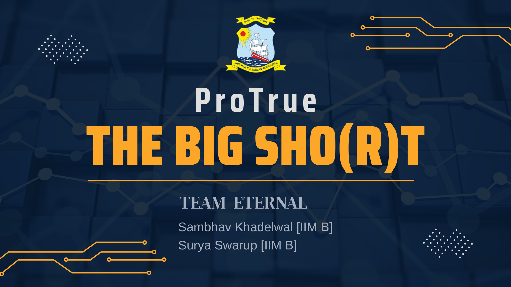
Case Competition Deck
ETERNAL — The Big Sho(r)t
A competition deck exploring ProTrue’s sports-nutrition opportunity through market analysis, segment positioning, economics, channel strategy, and investment logic.
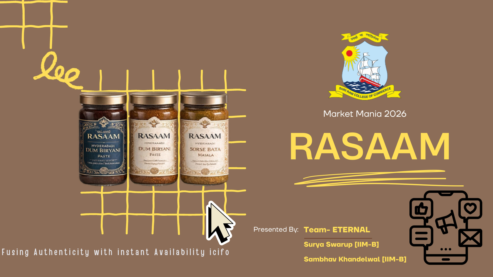
Case Competition Deck
Market Mania
A premium strategy deck built for SRCC Business Conclave, focused on market-facing insight, structured storytelling, and clear visual communication under a case competition format.
Documents
A recruiter-friendly vault of certificates, awards, letters, and resume assets.
Every document card supports both in-site preview and direct PDF opening.
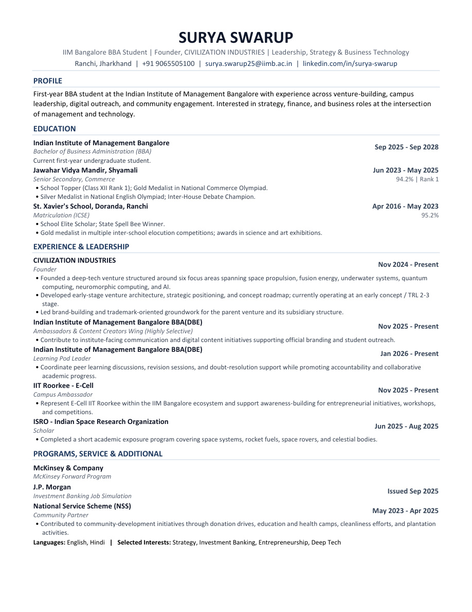
Resume
Your current resume PDF is integrated as-is, so you can replace it later without changing the website structure.
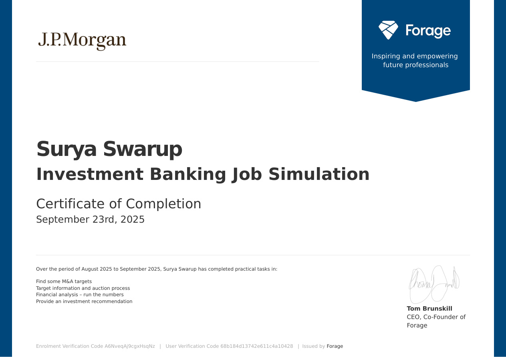
J.P. Morgan Investment Banking Job Simulation
Certificate of completion for M&A target screening, target information, financial analysis, and investment recommendation tasks.
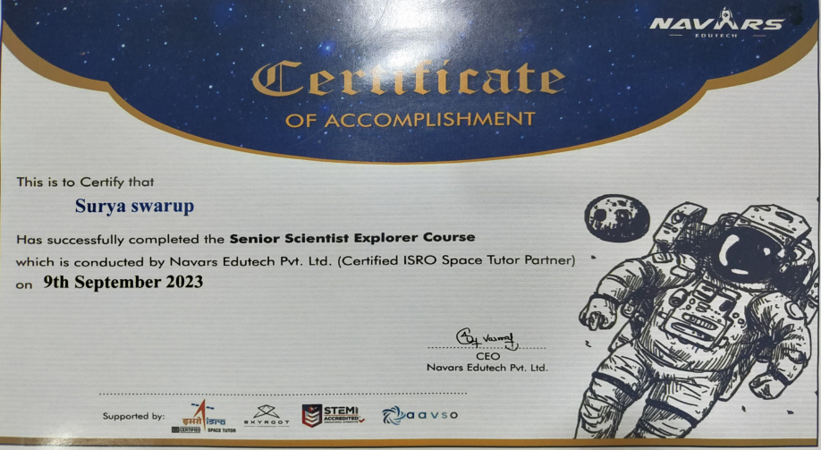
ISRO Certified Space Course
Course completion certificate documenting structured learning in space-science concepts and exploratory systems.
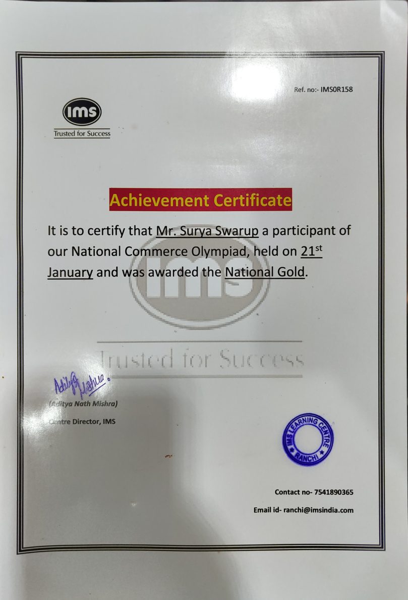
National Commerce Olympiad — Gold
Achievement certificate recognizing top national performance in Commerce Olympiad.
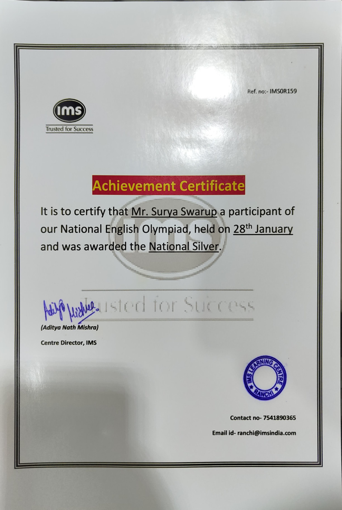
National English Olympiad — Silver
Achievement certificate reflecting strong English reasoning and performance at national level.
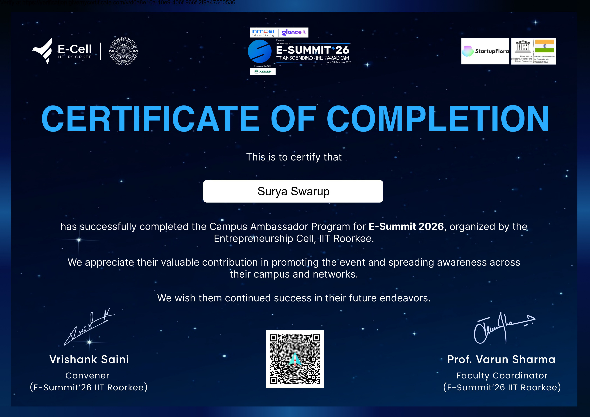
Campus Ambassador — IIT Roorkee
Offer/certificate document supporting the campus ambassador role integrated into the experience section.
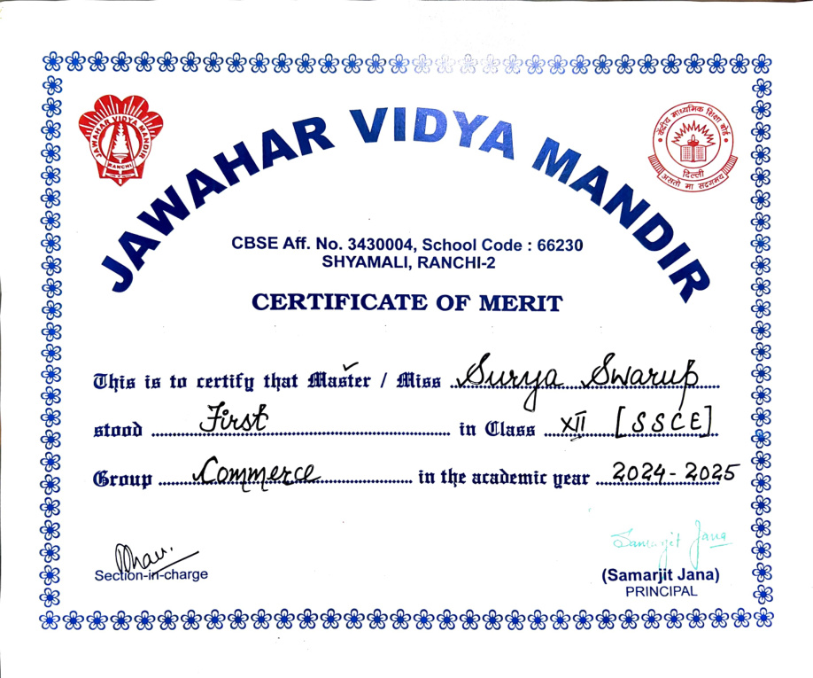
Class 12 Rank 1
Certificate of merit for school-level academic excellence in senior secondary education.
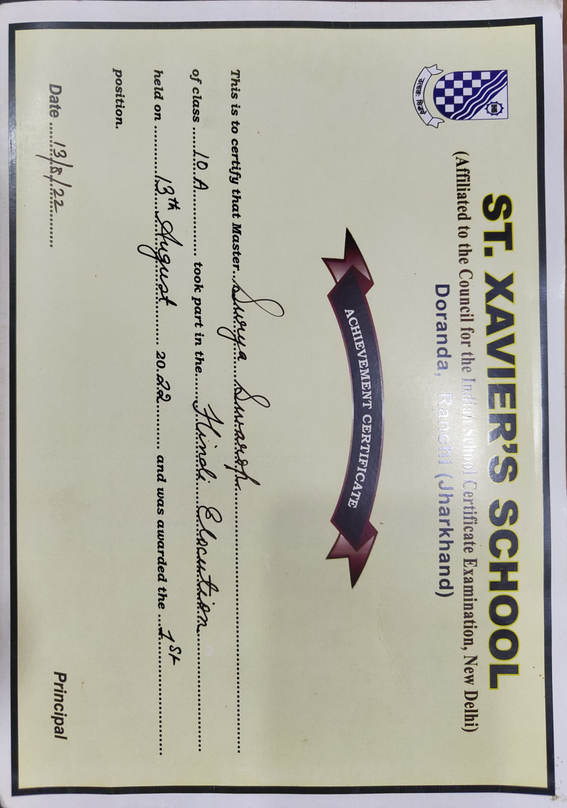
Class 10 Achievements
Supporting record for school achievements and recognition during the secondary academic phase.
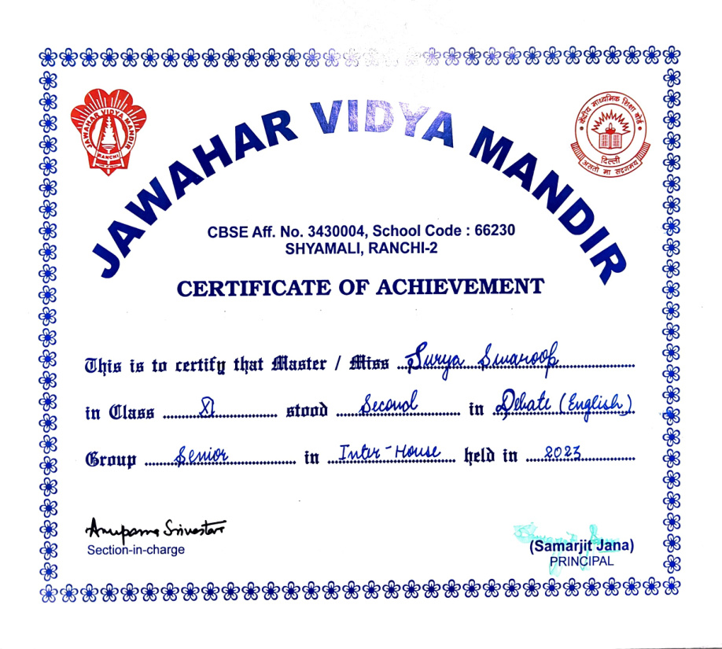
Class 12 Extra-curriculars
Additional activities and recognition records from the senior-secondary stage.
Contact
Built to make your profile feel sharper, cleaner, and far more memorable.
This website package is structured for your course assignment: premium styling, organized layout, direct PDF preview, and an easy path to GitHub Pages hosting.